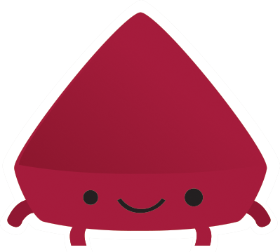

Conferencia Rails
Madrid, 13-15th October 2016
What is this?
Conferencia Rails is the most venerable large
scale Spanish Ruby and Rails related event. It has held 6 editions,
spawned 1 spin-off sister js event, received +1.500 attendees and
brought +100 speakers.
This year we will have some workshops on October 13th, and two days full of
amazing talks on October 14th and 15th. The conference will take place in
Madrid.
Speakers
We have also a good deal of talk proposals from all around the world.
The selected talks and schedule will be announced here soon.
Meanwhile, check our four confirmed international guest stars:
{% for speaker in page.speakers %}
{% endfor %}
And a lot more you can check out at the
speakers page.
Tickets
Tickets for the conference are already available and will be at a regular
price until end of stock, then a last minute batch will be released
Click on the ticket to get yours!
Who are the organizers?
Conferencia Rails is
organized by the “Asociación para la Promoción del Desarrollo
web” (APRODEWEB) a non-profit, volunteer-driven association
to promote web development in Spain. It has been organizing a
conference on Ruby and Rails for the past 6 years.